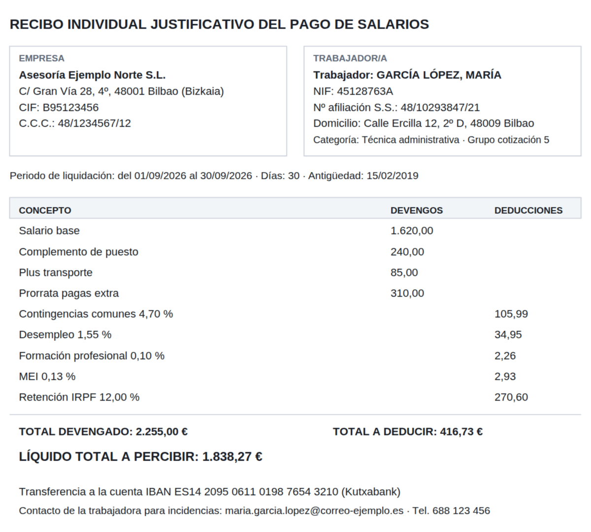
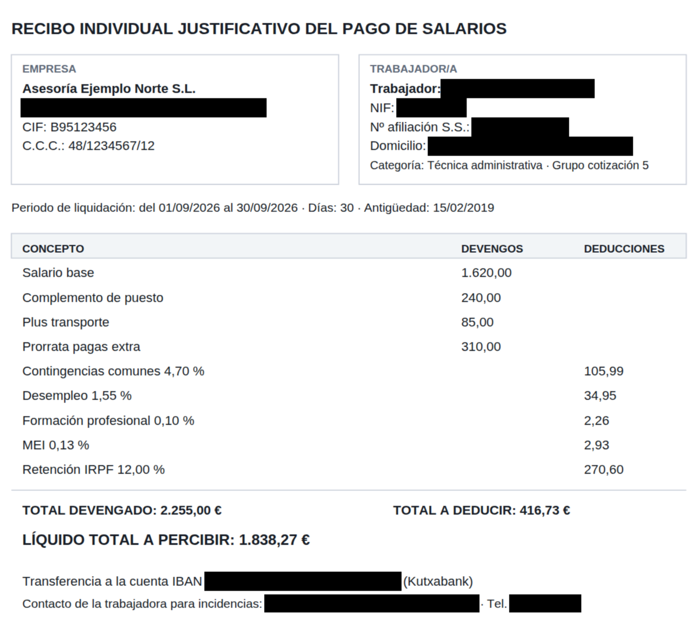

Gestorías y asesorías
Nóminas, modelos, facturas y escrituras que hay que compartir con terceros, subir a una plataforma o guardar como ejemplo sin exponer a tus clientes.
Sube un contrato, una nómina o una factura. Opaco localiza nombres, DNI, teléfonos, correos, direcciones, cuentas bancarias y fechas de nacimiento, te los enseña tapados sobre el documento y descargas una copia censurada de verdad.


AntesDespuésTapar datos uno a uno con un rotulador digital es lento y arriesgado: basta un nombre olvidado en la página 7 o un recuadro que se puede quitar para tener un problema de protección de datos.
Nóminas, modelos, facturas y escrituras que hay que compartir con terceros, subir a una plataforma o guardar como ejemplo sin exponer a tus clientes.
Contratos, demandas y documentación probatoria que se aportan a expedientes, se publican o se envían a la parte contraria con los datos de terceros protegidos.
Expedientes, contratos laborales, currículos y justificantes que se comparten con auditores, comités o proveedores sin revelar quién es quién.
Arrastra un contrato, una factura, una nómina o cualquier documento. También funciona con documentos escaneados: Opaco lee el texto de la imagen.
Ves el documento con los datos sensibles ya tapados y una lista agrupada por tipo. Activa o desactiva cada dato con un clic, busca un texto para taparlo en todas sus apariciones o dibuja un recuadro donde quieras.
Opaco genera un archivo nuevo en el que lo tapado ya no existe y comprueba automáticamente que ninguno de los datos censurados se puede recuperar.
No basta con buscar números: Opaco comprueba la letra del DNI, los dígitos de control del IBAN y de la Seguridad Social, y lee el contexto (“D.”, “Trabajador:”, “con domicilio en”, “fecha de nacimiento”) para no confundir un dato personal con un número de factura.
Si una persona aparece identificada una vez, Opaco marca también el resto de sus apariciones en el documento.
Muchos documentos “censurados” solo llevan un rectángulo dibujado encima: basta seleccionar el texto, copiarlo y pegarlo para leer lo que había debajo. Con Opaco eso no puede pasar.
Lo que ves:
Lo que obtiene cualquiera que copie el texto:
Lo que ves:
Lo que obtiene cualquiera que copie el texto:
Un crédito equivale a una página procesada. Sin permanencia: cambia de plan o cancela cuando quieras.
Para probar Opaco con tus propios documentos.
0 €
5 créditos de prueba
Para gestorías y despachos pequeños.
19 € / mes
200 créditos al mes
Para departamentos con volumen alto.
59 € / mes
1.000 créditos al mes
Demostración Los pagos de esta versión son simulados: al contratar un plan no se cobra nada ni se piden datos de tarjeta.
Ninguna herramienta automática puede garantizarlo, por eso Opaco nunca descarga nada sin que lo revises: ves cada dato marcado sobre el documento, puedes desactivar lo que no quieras tapar y añadir lo que falte buscando un texto o dibujando un recuadro. La responsabilidad final de la anonimización es de quien la revisa.
El censurado es un archivo nuevo en el que cada página es una imagen con los recuadros ya incorporados. Por eso el texto tapado no se puede recuperar. A cambio, el archivo suele pesar algo más, pierde los enlaces, formularios y firmas digitales del original, y el texto solo se puede seleccionar si activas la opción de conservar como texto buscable lo que no está censurado.
No. Todo el trabajo se hace en tu navegador: el documento no sale de tu ordenador. Por eso puedes usar Opaco con documentación confidencial.
Sí. Si una página no tiene texto (es una foto o un escaneo), Opaco reconoce el texto de la imagen y detecta los datos igual. La primera vez tarda algo más porque se prepara el reconocimiento en tu navegador.
Cada página que analizas consume un crédito, se descargue o no. Antes de analizar ves cuántos créditos va a gastar el documento y cuántos te quedan. Los créditos de los planes de pago se renuevan cada mes y no se acumulan.
Sí, desde “Mi cuenta”, cuando quieras. El plan sigue activo hasta el final del periodo que ya has pagado.
Cinco páginas gratis, sin tarjeta. Tus documentos no salen de tu ordenador.
Crear cuenta gratis